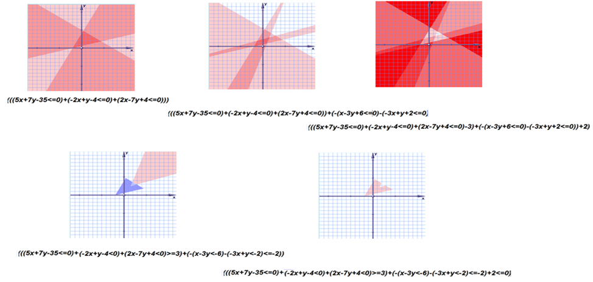
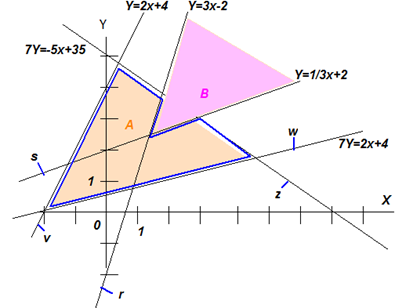

|
Лекция 45.
|
| x | y | r | s | z | v | w | B | A | C | |
|---|---|---|---|---|---|---|---|---|---|---|
| x | 3 | -1 | -5 | 2 | -2 | |||||
| y | -1 | 3 | -7 | -1 | 7 | |||||
| r | 1 | |||||||||
| s | 1 | |||||||||
| z | 1 | |||||||||
| v | 1 | |||||||||
| w | 1 | |||||||||
| B | -1 | |||||||||
| A | 2 | |||||||||
| C | ||||||||||
| h | -2 | -6 | 35 | 4 | -4 | -2 | -3 | -2 |
Пример нейронной сети, порождающей функцию С=f(X,Y)
Примечание: чем однороднее, формальнее, компактнее запись, тем легче проводить с ней математические операции
Найдём и нарисуем график функции С=f(X,Y), которая представляет собой математическую модель нейронной сети. При описании сети используем стандартную запись: q=(a*x+b*y+h>=0), которая означает, что переменная q (выход нейрона) равна 1, если неравенство выполняется, и q равна 0, если неравенство не выполняется.
Таким образом:
v = (2x-y+4>=0) или (2x-y>=-4) (2)
w = (-2x+7y-4>=0) или (-2x+7y>=4) (3)
A = z&v&w = (z+v+w-3>=0) или (z+v+w>=3) (4)
r = (3x-y-2>=0) или (3x-y>=2) (5)
s = (-x+3y-6>>=0) или (-x+3y>=6) (6)
B = r&s = (r+s-2>=0) или (r+s>=2) (7)
C = A&НЕ(B) = (2A-B-2>=0) или (2A-B>=2) (8)
Геометрия нейросетей
Геометрически конструкции 1,2,3 этой системы представляют собой неравенства, которые в пространстве x,y отсекают полуплоскости прямыми линиями типа ax+by+h=0 и, пересекаясь между собой, образуют области, в которых z (или v, или w) принимают значения 0 или 1. Сложение результатов неравенств z, v, w между собой в различных частях пространства x,y (при различных значениях переменных x,y) даёт различные результаты: 1, 2 или 3.
Нейрон с выходом А во втором слое сети (уравнение 4) реагирует в частности на значение этой суммы z+v+w, возбуждаясь (А=1) или нет (А=0). Возбуждается этот нейрон в области ярко красного треугольника, где все положительные полуплоскости z, v, w пересекаются, так как значение порога нейрона равно 3.
На рисунке далее добавлены полуплоскости неравенств 5 и 6 и показаны дополнительные области, образованные суммой переменных r и s в уравнении 7. Области представляют собой трёхмерную функцию в пространстве координат x, y, принимающую значения от 0 до 5 в разных частях пространства (x,y), что указано цветом.

Уравнения 4 и 7 с заданными неравенствами выделяют две области А и В (синяя и розовая на рисунке), которые соответствуют выходам нейронов второго слоя нейросети. Переменные А и В принимают значения 0 или 1 каждая в зависимости от области пространства, то есть значений рецепторов x, y.
Уравнение 8, содержащее значения А и В в линейной комбинации -2А+В+2<=0 реализует, для примера, логическую функцию С=А И НЕ(В) (А без В) на области допустимых значений аргументов {А,В}={0,1}, что можно проверить по таблице истинности.
| A | B | С = А И НЕ(В) = 2А-В-2>=0 |
|---|---|---|
| 0 | 0 | 0 |
| 0 | 1 | 0 |
| 1 | 0 | 1 |
| 1 | 1 | 0 |
Это значит, что результирующая область (розовая фигура, соответствующая значениям С=1) имеет вид, показанный на рисунке.
В итоге после подстановок формула сети (жёлтая область С с синим контуром) будет иметь вид: С=(2((-5x-7y+35>=0)+(2x-y+4>=0)+(-2x+7y-4>=0)>=3)-((3x-y-2>=0)+(-x+3y-6>=0)-2>=0)>=2).
Сколько выходов будет иметь сеть, столько будет подобных выражений-двойников, которые в случае необходимости могут быть собраны в единую формулу через операцию ИЛИ. Выражения предназначены для удобства алгебраического исчисления условий функционирования сети и арифметического вычисления состояния сети.

Понимание мира нейросетью
Фактически, обобщая сказанное, сеть задаёт гиперобласти (фигуры) в пространстве рецепторов x,y. Размерность пространства совпадает с количеством рецепторов сети. При этом образование гиперфигур соответствует классам, то есть сложным понятиям, образующимся в сознании сети. Рецепторы соответствуют входным переменным – ощущениям. Таким образом, сеть имитирует понимание классов реакций мозга в пространстве рецепторов (X,Y) – ощущений, то есть связывает простейшие ощущения, поступающие из окружающего мира, со сложным пониманием устройства мира логической формулой - моделью.
Заметим, что x, y – признаки, тип рецептора. Например, х - размер, y - вес.
Значения, которые принимают x, y – свойства, сигналы с рецепторов. Например, легкий (y=0), тяжелый (y=1), средней тяжести (y=0.3). В языке описываются прилагательными.
z, v, w – признаки более абстрактного характера. Например, весо-размер. Эти признаки выражаются зависимостями (например, 5x+7y=35), неравенствами (например, 5x+7y-35<=0), задающими области в пространстве ощущений, поля сложных свойств. Умножение выполняет роль операции И, сложение – ИЛИ. Поэтому определение «кошка», составленное как сложная логическая функция из комбинации И-ИЛИ-операций, представляет собой сеть, каждый нейрон которой – суть уравнение-неравенство, закон, комбинация понятий. А вся сеть - комбинация законов, модель.
Скалярное произведение вектора ощущений Х на вектор весов понимания k есть косинус угла между нашими реальными ощущениями и внутренним пониманием мира. Как уже говорилось, косинус – это мера похожести перемножаемых векторных величин.
Во внутренних областях нейросети это принимает форму скалярного произведения вектора предыдущего понимания на вектор понимания следующей абстракции, что соответствует образованию все более сложных абстракций в представлении сети.
Пересечение свойств задает объекты, элементы. Например, зеленое И круглое И сладкое – это яблоко. Такими в нашей сети являются выражения для А и В, второй слой сети. Поля свойств образуют выпуклые фигуры-понятия, объекты, элементы, описываемые именами существительными.
Третий слой нейросети указывает на отношения (связи) объектов с помощью действий И, ИЛИ, НЕ. Третий слой образует произвольные фигуры в пространстве ощущений, в том числе и вогнутые. По сути третий слой сети – функция, действие, глагол. А также сложные понятия: кошка без шерсти.
Мы знаем, что после того как определены объекты и связи между ними, появляется система. По определению система – это связанные между собой элементы, порождающие новые свойства. Поэтому третий слой можно рассматривать как новые свойства. Далее триаду «свойства –> элементы –> связи» можно повторять, образуя всё более сложные понятия, классы, восприятия, функции, системы за счет введения новых слоёв сети. Фактически на этом строится «глубокое обучение». Чем больше слоёв сети – тем сложнее и абстрактнее понятия, которыми она оперирует. По сути разум, проявляемый нашим мозгом, есть сложная функция, подобная устройству окружающего нас мира, модель мира. Мозг – цифровой двойник мира и может быть даже более того, но при наличии у него более высоких абстракций (слоев сети). Мозг сам своей сложностью начинает достраивать мир, становится продолжением и частью всё более сложного мира. Как мир усложняется согласно «Всемирной таблице элементов и систем», так и мозг усложняется в понимании (отражении) мира. Однако, мозг может развиваться быстрее и даже обгонять процесс усложнения мира, оставаясь его наращиваемой частью.
Итог:
x y – признаки–свойства, ощущения мира нейронной сетью
z = (5x+7y-35<0) – неравенство, область-поле, свойство, восприятие
A = (-z-v-w+3<0) – выпуклая замкнутая фигура, пересечение свойств, объект, элемент
C=A&НЕ(B)=(-2A+B+2<0) – произвольная область, в том числе вогнутая, функция, действия над объектами, отношения, логика, новое свойство, система
Задания
- Нарисуйте сеть, которая может решить задачу на теорему Пифагора.
- Внимание, до вас это никто не делал. Представив описание нейронной сети в виде матрицы, найдите по ней с помощью математических операций таблицу истинности, соответствующую этой сети.
- По таблице истинности найдите матрицу сети.
- По матрице постройте геометрический образ сети.
- Постройте математически обратную сеть (X,Y)=f(C).
- Для заданной сети постройте перпендикулярную к ней сеть. Объясните понятие перпендикулярности.
- Загрузите упражнение с сайта. Задайте свою таблицу примеров. Задайте параметры нейронной сети. Активируйте обучение. По графику функции ошибок определите окончание обучения. Проведите проверку работоспособности обученной сети на новых примерах.
- Загрузите с сайта упражнение «Цветная алгебра». Запишите формулу нейронной сети. Посмотрите на изображение области наблюдения сети в плоскости экрана монитора. Измените формулу. Сравните изображения. Подберите параметры сети для заданной вами таблицы примеров.
- Как будет выглядеть геометрический образ сети, имеющей 100 рецепторов и 5 слоев по 200 нейронов?
- Как отличается геометрический образ сети, собранной на ступенчатых нейронах от образа сети, собранной на линейчатых нейронах?
- Соберите нейронную сеть сказки «Красная Шапочка». Сгенерируйте её геометрический образ. Составьте таблицу истинности этой сказки, используя текст стороннего рассказчика. Наложите геометрические образы друг на друга. О чём говорит пересечение гиперобластей?
- Составьте регрессионную модель авиадвигателя. Сравните полученную модель с моделью нейронной сети.
Презентация:
| Лекция 44. На что способны нейронные сети | Лекция 46. Примеры применения нейросетей | ||||||||||||||||
|
|||||||||||||||||